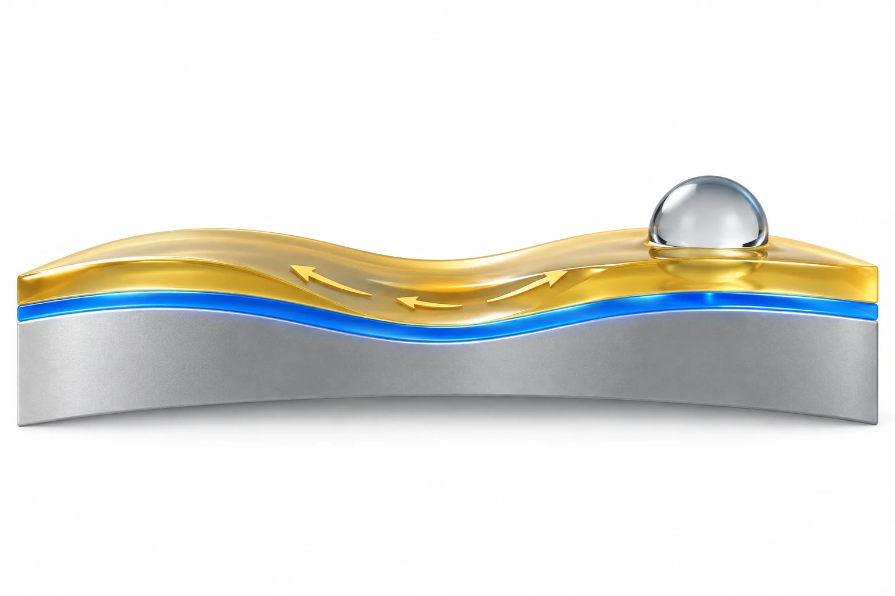

연구 배경과 분류
의료 표면의 생물학적 오염과 마찰을 낮추는 윤활 계면이 중심이다. 산업용 탈형 등 응용도 포함하므로 모든 결과를 숙주 반응으로 읽지 않는다.
연구 배경
오염을 덜 받는 윤활 표면도 실제 기기에서는 마찰과 굽힘으로 손상될 수 있습니다. 고정된 코팅만으로 표면 상태를 유지하기 어려운 상황에서 이 연구는 흡착층과 이동 가능한 윤활층의 역할을 나눕니다. 표면을 붙잡는 기능과 손상 부위에 다시 퍼지는 기능을 같은 재료 계열 안에서 연결한 접근입니다.
핵심 접근과 발전
낮은 분자량의 PFPE는 용매가 증발한 뒤 표면에 물리적으로 흡착하여 낮은 표면 에너지의 바탕을 만듭니다. 그 위의 더 높은 분자량 PFPE 액체는 친화적인 계면에 유지되며 유동성을 제공합니다. 단단하게 경화한 네트워크를 다시 만드는 방식보다 이동 가능한 액체가 표면을 재정렬하는 방식에 가깝습니다.

AI 생성 개념도: SLIME의 낮은 분자량 PFPE 흡착 기반과 높은 분자량 PFPE의 이동성 윤활 영역을 구분합니다. 화살표는 남아 있는 액체의 이동 가능성을 뜻하며, 고체 균열의 자가치유나 실제 회복 유동을 측정한 결과가 아닙니다.
금색은 액체 영역을 구분하는 색이며 금속층을 뜻하지 않습니다. 층 두께·분자 배열·화살표 방향과 속도·물방울 접촉각을 재현하지 않았습니다. 윤활액 소실 뒤 무한 재생이나 무보충 수명도 나타내지 않습니다.
논문 원그림을 복제한 이미지가 아니며, 원그림 재사용 허가를 의미하지 않습니다.
공개 논문의 개념으로 웹 ChatGPT에서 생성하고, 선택적으로 읽은 본문과 명시된 독립 검토 범위 안에서 개념의 일치 여부를 확인했습니다. 전체 본문·보충자료 검증을 뜻하지 않습니다. 표시용 WebP 인코딩 외에 자르기나 내용 편집을 하지 않았습니다.
평가 방법과 조건
초기 표면의 화학·두께·거칠기·투명도 평가와, 마찰·굽힘 뒤의 기능 평가는 다른 질문에 답합니다. 앞의 시험은 코팅이 어떻게 형성되었는지를, 뒤의 시험은 변형 후 계면이 유지되는지를 봅니다. 생물오염 평가까지 연결해야 표면 형성만으로 실제 항오염 기능을 대신 주장하지 않게 됩니다.
주요 결과
면봉 마찰 뒤 SLIME 표면에서는 물방울이 걸리지 않고 계속 굴러갔지만, 본문이 설명한 SAM 대조면에서는 물방울 고정이 나타났습니다. 이 차이는 남아 있는 이동성 PFPE가 손상 부위에 다시 퍼지는 기전과 연결됩니다. 본문 설명을 확인했으며 보충 그림 자체의 전수 검증은 아니고, 윤활액 소실 뒤 무한 재생되는 고체 자가치유를 의미하지도 않습니다.
한계와 남은 질문
후속 질문은 반복적인 마찰·유동에서 윤활액이 얼마나 남는지, 기기별 기판과 형상이 흡착을 어떻게 바꾸는지입니다. 확인한 생체적합성 시험을 장기 삽입 안전성으로 확대하지 않습니다. 손상 정도와 회복 시간을 맞춘 비교가 있어야 다른 항오염 코팅과 내구성을 공정하게 비교할 수 있습니다.
관련 외부 연구
Bioinspired self-repairing slippery surfaces with pressure-stable omniphobicity
윤활액을 유지하는 SLIPS와 SLIME의 흡착 공정을 비교한다.
외부 논문은 초록만 확인했다. 압력 안정성과 SLIME의 마모 내구성은 서로 다른 시험 항목이다.
초록 확인교신저자 확인
서정목 교신 확인아래는 서정목의 교신저자 여부에 관한 확인 기록입니다. 저자 순서나 별표만으로 판정하지 않으며, 본문 내용 검증과 별도로 읽어야 합니다.
- 교신 고지 확인 출처 ↗
Corresponding Author — Jungmok Seo
Author information: Jungmok Seo block · public_publisher_author_information_read
- 본문 확인 범위
- Wiley 공개 본문의 제작 원리, 표면 성능, 손상 시험과 생체적합성 절을 확인했다. 보충자료 전체와 장기 이식 자료는 별도 검증 대상이다.
- 보충자료 확인 범위
- 보충자료를 전수 검토하지 않았습니다. 본문에서 보충자료를 인용한 사실과 해당 보충자료를 직접 확인한 범위를 구분합니다.
- 남은 확인
- 보충자료의 반복 세척·윤활제 손실 조건과 장기 노출 자료를 확인할 것.
COVERAGE & OUTREACH
보도와 소개
논문과의 연관성을 확인한 소개 자료입니다. 언론 게재는 독립 취재나 실험 결과의 추가 검증을 뜻하지 않습니다.
이번 검색 범위에서 본문 대조를 마친 관련 소개 링크를 찾지 못했습니다. 관련 자료가 없다는 뜻은 아닙니다.
101편의 채널별 조사 범위와 검색 기록 →근거와 확인 범위
Wiley 공개 본문의 제작 원리, 표면 성능, 손상 시험과 생체적합성 절을 확인했다. 보충자료 전체와 장기 이식 자료는 별도 검증 대상이다.
추가 해설은 아래에 명시한 근거 범위에서 편집 검토를 승인한 내용입니다. 모든 본문·보충자료의 검증 완료를 뜻하지 않습니다.
- 추가 본문 확인 범위
- Wiley 공개 본문의 제작 원리, 표면 성능, 손상 시험과 생체적합성 절을 확인했다. 보충자료 전체와 장기 이식 자료는 별도 검증 대상이다.
- 추가 보충자료 확인 범위
- 보충자료를 전수 검토하지 않았습니다. 본문에서 보충자료를 인용한 사실과 해당 보충자료를 직접 확인한 범위를 구분합니다.
- 원본 공개 논문 목록 ↗ · #83 · 2026-10-03
- Crossref metadata ↗: 이 Crossref 항목은 공개 서지 메타데이터 대조 기록입니다. 초록·본문·보충자료의 실제 열람 범위는 이 페이지의 별도 근거 기록에 명시하며, 서지 대조만으로 전문 열람이나 본문·보충자료 전체 검증 완료를 판정하지 않습니다. license_urls는 등록된 링크 목록이며 본문·그림 재배포 허가를 의미하지 않습니다. TDM 또는 게시 정책 링크가 포함될 수 있습니다.
- Rapid and Scalable Lubrication Coating for Industrial and Medical Applications via Sequential Dip-Coating ↗
public_web_full_text · Sections 2.1–2.3, 2.5 and Conclusion - Rapid and Scalable Lubrication Coating for Industrial and Medical Applications via Sequential Dip‐Coating ↗
public_publisher_selected_full_text_read · §2.1 Fabrication/design; Conclusion - Rapid and Scalable Lubrication Coating for Industrial and Medical Applications via Sequential Dip‐Coating ↗
public_publisher_selected_full_text_read · §2.1: low-molecular-weight PFPE adsorption and high-molecular-weight mobile lubricant - Rapid and Scalable Lubrication Coating for Industrial and Medical Applications via Sequential Dip‐Coating ↗
public_publisher_selected_full_text_read · §2.1–2.3: surface characterization and damage tests; §2.5 biocompatibility - Rapid and Scalable Lubrication Coating for Industrial and Medical Applications via Sequential Dip‐Coating ↗
public_publisher_selected_full_text_read · §2.3 first three paragraphs; Fig. 3A and main-text description of SAM comparison referencing Fig. S3; supplementary figure itself not independently audited - Rapid and Scalable Lubrication Coating for Industrial and Medical Applications via Sequential Dip‐Coating ↗
public_publisher_selected_full_text_read · §2.3; §2.5; Conclusion; editorial durability and implant-safety questions - Rapid and Scalable Lubrication Coating for Industrial and Medical Applications via Sequential Dip‐Coating ↗
independent_reviewer_selected_main_text · Public Wiley §2.1 adsorption/mobile-PFPE roles, §2.2 fouling, §2.3 abrasion/rolling passages; main-text account of SI only - 추가 해설의 근거 ↗
연구 배경 · §2.1 Fabrication/design; Conclusion · public_publisher_selected_full_text_read - 추가 해설의 근거 ↗
핵심 접근과 발전 · §2.1: low-molecular-weight PFPE adsorption and high-molecular-weight mobile lubricant · public_publisher_selected_full_text_read - 추가 해설의 근거 ↗
평가 방법과 조건 · §2.1–2.3: surface characterization and damage tests; §2.5 biocompatibility · public_publisher_selected_full_text_read - 추가 해설의 근거 ↗
주요 결과 · §2.3 first three paragraphs; Fig. 3A and main-text description of SAM comparison referencing Fig. S3; supplementary figure itself not independently audited · public_publisher_selected_full_text_read - 추가 해설의 근거 ↗
한계와 남은 질문 · §2.3; §2.5; Conclusion; editorial durability and implant-safety questions · public_publisher_selected_full_text_read - 추가 해설의 근거 ↗
관련 연구와의 연결 · §2.1 coating-retention mechanism; external abstract · public_publisher_selected_full_text_read - 추가 해설의 근거 ↗
관련 연구와의 연결 · Bioinspired self-repairing slippery surfaces with pressure-stable omniphobicity; DOI 10.1038/nature10447; previously verified Abstract · public_external_abstract_read